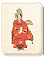
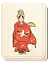

Requires
- Arts:
 

Effects
- Consumes food: 1
- +2% bonus to clan-wide tax rate
- +1 to clan-wide happiness
Description
The cultural pursuits of a lord reveal much about his ability to lead men. Sumo is an excellent representation of a man's strength and an effective way for a leader to display his power and influence to the people. Tournaments can last for days and involve many fighters: the only limits are the lord's purse and influence! News of sumo tournaments soon spreads and a clan's people can feel greatly uplifted as a consequence.
Oda Nobunaga was the first to stage a sumo event that used the now-famous ring. Before that, the spectators simply stood in a circle to mark the fight's boundaries. Sumo tournaments were a good way for a leader to display his power and wealth to the masses: Nobunaga assembled 1,500 fighters to entertain the public during his tournament.
The origins of sumo wrestling are lost in time, as wrestling in its most basic form has been around for many generations. Heavily steeped in Shinto tradition, sumo bouts are incredibly short, but the ceremonies that precede them are lengthy and filled with religious symbolism. Even the ring itself, a clay ring filled with sand, is a symbol of the purity of Shinto.